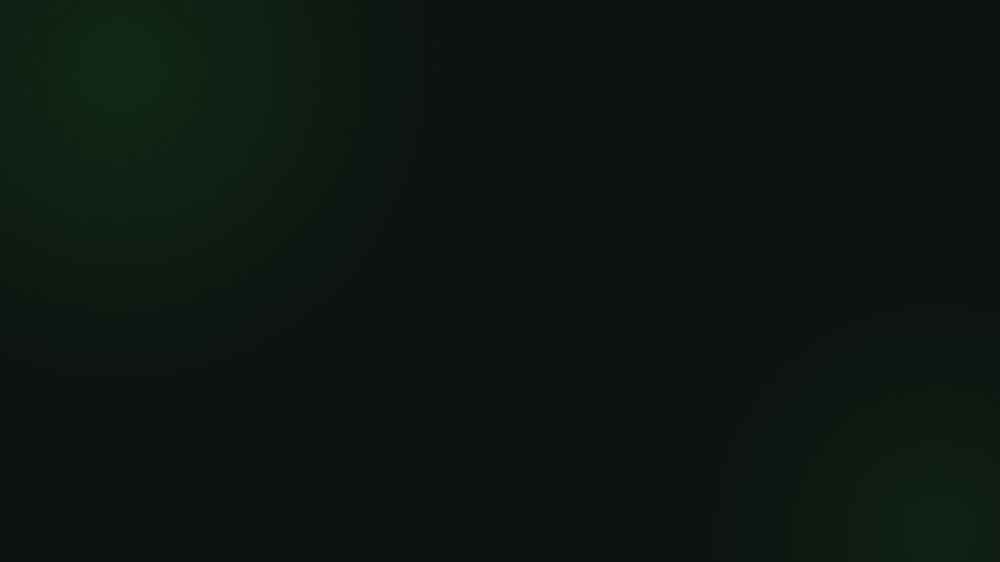

Что уже есть на рынке
Чем отвечает счёт
Яндекс Банк
счёт «Сейв»
Платит за подписку и покупки: 8% базовая, 11% с «Плюсом», 13% в день оплаты картой «Пэй».
Надбавки за приток, стаж и запас на новые деньги. Подписка и обязательные покупки не нужны.
Т-Банк
сервис «Распределения»
С мая 2025 сервис предлагает раскладку в день зарплаты, клиент подтверждает операции.
Первая раскладка — с подтверждением, дальше счёт раскладывает сам, а платежи уходят в срок.
Фонды денежного рынка
Московская биржа
Больше 2 трлн ₽ и около 3 млн владельцев. Доходность близка к ключевой ставке, 14%.
Ставка ниже, до 12,5%, зато деньги застрахованы. Сверх подушки счёт сам предлагает фонд Сбера.
Т—Ж, 28.09.2026; пресс-релиз Т-Банка, 28.05.2025; Московская биржа, сентябрь 2026. Ставки и условия сверить с тарифами.